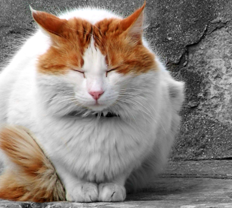

<div style="background-color:red;width:200px;">
    Hello there, Jasmine.<br/>
    My favourite color is blue.My favourite color is blue.My favourite color is blue.My favourite color is blue.My favourite color is blue.
    <div style="background-color:blue;border:3px dashed green;">
        Pink is &lt; than blue.
        I like green, red & blue.
    </div>
    this is the last text.
</div>


<div style="color:rgb(116, 242, 27);background-color:coral;">
    Welcome!<br/>
    Jasmine.
</div>


<br/>

